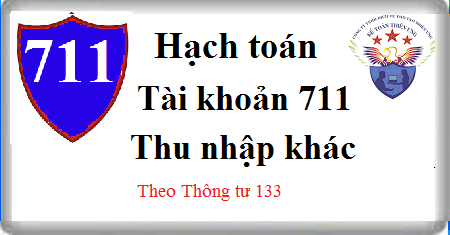

Hướng dẫn cách hạch toán Tài khoản 711 theo thông tư 133, Cách hạch toán Thu nhập khác như: thanh lý, nhượng bán TSCĐ, tiền bồi thường, tiền phạt thu được, tiền hoàn thuế, hàng cho biếu tặng nhận được, thu lại được khoản nợ khó đòi đã xóa sổ…
1. Nguyên tắc kế toán Tài khoản 711 - Thu nhập khác
a) Tài khoản này dùng để phản ánh các khoản thu nhập khác ngoài hoạt động sản xuất, kinh doanh thông thường của doanh nghiệp, gồm:
- Thu nhập từ nhượng bán, thanh lý TSCĐ;
- Chênh lệch giữa giá trị hợp lý tài sản được chia từ BCC cao hơn chi phí đầu tư xây dựng tài sản đồng kiểm soát;
- Chênh lệch lãi do đánh giá lại vật tư, hàng hóa, tài sản cố định đưa đi góp vốn liên doanh, đầu tư vào công ty liên kết và đầu tư khác;
- Các khoản thuế phải nộp khi bán hàng hóa, cung cấp dịch vụ nhưng sau đó được giảm, được hoàn (thuế xuất khẩu được hoàn, thuế GTGT, TTĐB, BVMT phải nộp nhưng sau đó được giảm);
- Thu tiền phạt do khách hàng vi phạm hợp đồng;
- Thu tiền bồi thường của bên thứ ba để bù đắp cho tài sản bị tổn thất (ví dụ thu tiền bảo hiểm được bồi thường, tiền đền bù di dời cơ sở kinh doanh và các khoản có tính chất tương tự);
- Thu các khoản nợ khó đòi đã xử lý xóa sổ;
- Thu các khoản nợ phải trả không xác định được chủ;
- Các khoản tiền thưởng của khách hàng liên quan đến tiêu thụ hàng hóa, sản phẩm, dịch vụ không tính trong doanh thu (nếu có);
- Thu nhập quà biếu, quà tặng bằng tiền, hiện vật của các tổ chức, cá nhân tặng cho doanh nghiệp;
- Giá trị số hàng khuyến mại không phải trả lại nhà sản xuất;
- Các khoản thu nhập khác ngoài các khoản nêu trên.
b) Khi có khả năng chắc chắn thu được các khoản tiền phạt vi phạm hợp đồng, kế toán phải xét bản chất của khoản tiền phạt để kế toán phù hợp với từng trường hợp cụ thể theo nguyên tắc:
- Đối với bên bán: Tất cả các khoản tiền phạt vi phạm hợp đồng thu được từ bên mua nằm ngoài giá trị hợp đồng được ghi nhận là thu nhập khác.
- Đối với bên mua:
+ Các khoản tiền phạt về bản chất là khoản giảm giá hàng mua, làm giảm khoản thanh toán cho người bán được hạch toán giảm giá trị tài sản hoặc khoản thanh toán (không hạch toán vào thu nhập khác) trừ khi tài sản có liên quan đã được thanh lý, nhượng bán.
- Ví dụ khi nhà thầu thi công chậm tiến độ, chủ đầu tư được phạt nhà thầu theo đó được quyền thu hồi lại một phần số tiền đã thanh toán cho nhà thầu thì số tiền thu hồi lại được ghi giảm giá trị tài sản xây dựng. Tuy nhiên nếu khoản tiền phạt thu được sau khi tài sản đã được thanh lý, nhượng bán thì khoản tiền phạt được ghi vào thu nhập khác.
+ Các khoản tiền phạt khác được ghi nhận là thu nhập khác trong kỳ phát sinh, ví dụ: Người mua được quyền từ chối nhận hàng và được phạt người bán nếu giao hàng không đúng thời hạn quy định trong hợp đồng thì khoản tiền phạt phải thu được ghi nhận là thu nhập khác khi chắc chắn thu được. Trường hợp người mua vẫn nhận hàng và số tiền phạt được giảm trừ vào số tiền phải thanh toán thì giá trị hàng mua được ghi nhận theo số thực phải thanh toán, kế toán không ghi nhận khoản tiền phạt vào thu nhập khác.
2. Kết cấu và nội dung Tài khoản 711 - Thu nhập khác
Bên Nợ:
- Số thuế GTGT phải nộp (nếu có) đối với các khoản thu nhập khác ở doanh nghiệp nộp thuế GTGT theo phương pháp trực tiếp.
- Cuối kỳ kế toán, kết chuyển các khoản thu nhập khác phát sinh trong kỳ sang tài khoản 911 “Xác định kết quả kinh doanh”.
Bên Có: Các khoản thu nhập khác phát sinh trong kỳ.
Tài khoản 711 - Thu nhập khác không có số dư cuối kỳ.
3. Cách hạch toán Thu nhập khác Tài khoản 711
a) Kế toán thu nhập khác phát sinh từ nghiệp vụ nhượng bán, thanh lý TSCĐ:
- Phản ánh số thu nhập về thanh lý, nhượng bán TSCĐ:
Nợ các Tài khoản 111, 112, 131 (tổng giá thanh toán)
Có TK 711 - Thu nhập khác (số thu nhập chưa có thuế GTGT)
Có TK 3331 - Thuế GTGT phải nộp (33311) (nếu có).
- Các chi phí phát sinh cho hoạt động thanh lý, nhượng bán TSCĐ, ghi:
Nợ TK 811 - Chi phí khác
Nợ TK 133 - Thuế GTGT được khấu trừ (nếu có)
Có các TK 111, 112, 141, 331,... (tổng giá thanh toán).
- Đồng thời ghi giảm nguyên giá TSCĐ thanh lý, nhượng bán, ghi:
Nợ TK 214 - Hao mòn TSCĐ (giá trị hao mòn)
Nợ TK 811 - Chi phí khác (giá trị còn lại)
Có TK 211 - Tài sản cố định (nguyên giá)
b) Kế toán thu nhập khác phát sinh khi đánh giá lại vật tư, hàng hoá, TSCĐ đưa đi đầu tư vào công ty liên doanh, liên kết hoặc góp vốn đầu tư vào đơn vị khác:
- Khi đầu tư vào công ty liên doanh, liên kết, đầu tư dài hạn khác dưới hình thức góp vốn bằng vật tư, hàng hóa, căn cứ vào giá đánh giá lại vật tư, hàng hoá, được thoả thuận giữa nhà đầu tư và bên nhận đầu tư, trường hợp giá đánh giá lại của vật tư, hàng hoá lớn hơn giá trị ghi sổ của vật tư, hàng hoá, ghi:
Nợ TK 228 – Đầu tư góp vốn vào đơn vị khác (giá đánh giá lại)
Có các Tài khoản 152, 153, 155, 156 (giá trị ghi sổ)
Có TK 711 - Thu nhập khác (chênh lệch giữa giá đánh giá lại lớn hơn giá trị ghi sổ của vật tư, hàng hoá).
- Khi đầu tư vào công ty liên doanh, liên kết, đầu tư dài hạn khác dưới hình thức góp vốn bằng TSCĐ, căn cứ vào giá trị đánh giá lại TSCĐ được thoả thuận giữa nhà đầu tư và bên nhận đầu tư, trường hợp giá đánh giá lại của TSCĐ lớn hơn giá trị còn lại của TSCĐ, ghi:
Nợ TK 228 – Đầu tư góp vốn vào đơn vị khác (giá trị đánh giá lại)
Nợ TK 214 - Hao mòn TSCĐ (giá trị hao mòn luỹ kế)
Có TK 211 - Tài sản cố định (nguyên giá)
Có TK 711 - Thu nhập khác (chênh lệch giữa giá trị đánh giá lại của TSCĐ lớn hơn giá trị còn lại của TSCĐ).
c) Khi hết thời hạn bảo hành công trình xây lắp, nếu công trình không phải bảo hành hoặc số dự phòng phải trả về bảo hành công trình xây lắp lớn hơn chi phí thực tế phát sinh thì số dự phòng phải trả về bảo hành công trình xây lắp không sử dụng hết phải hoàn nhập, ghi:
Nợ TK 352 - Dự phòng phải trả
Có TK 711 - Thu nhập khác.
d) Phản ánh các khoản thu tiền phạt
- Trường hợp các khoản tiền phạt được ghi giảm giá trị tài sản, ghi:
Nợ các TK liên quan
Có các Tài khoản 151, 152, 153, 154, 156, 241, 211…
- Trường hợp các khoản tiền phạt được ghi nhận vào thu nhập khác, ghi:
Nợ các TK liên quan
Có TK 711 - thu nhập khác.
đ) Phản ánh các khoản được bên thứ ba bồi thường (như tiền bảo hiểm được bồi thường, tiền đền bù di dời cơ sở kinh doanh...), ghi:
Nợ các Tài khoản 112, 111, ...
Có TK 711 - Thu nhập khác.
- Các khoản chi phí liên quan đến xử lý các thiệt hại đối với những trường hợp đã mua bảo hiểm, ghi:
Nợ TK 811 - Chi phí khác
Nợ TK 133 - Thuế GTGT được khấu trừ (nếu có)
Có các TK 111, 112, 152,...
e) Hạch toán các khoản phải thu khó đòi đã xử lý xóa sổ, nay thu lại được tiền:
- Nếu có khoản nợ phải thu khó đòi thực sự không thể thu nợ được phải xử lý xoá sổ, căn cứ vào biên bản xử lý xoá nợ, ghi:
Nợ TK 229 - Dự phòng tổn thất tài sản (2293) (nếu đã lập dự phòng)
Nợ TK 642 - Chi phí quản lý kinh doanh (nếu chưa lập dự phòng)
Có TK 131 - Phải thu của khách hàng.
- Khi truy thu được khoản nợ khó đòi đã xử lý xoá sổ, ghi:
Nợ các TK 111, 112,...
Có TK 711 - Thu nhập khác.
g) Các khoản nợ phải trả không xác định được chủ nợ, quyết định xoá nợ và tính vào thu nhập khác, ghi:
Nợ TK 331 - Phải trả cho người bán
Nợ TK 338 - Phải trả, phải nộp khác
Có TK 711 - Thu nhập khác.
h) Kế toán các khoản thuế phải nộp khi bán hàng hóa, cung cấp dịch vụ nhưng sau đó được hoàn, được giảm:
- Khi nhận được quyết định của cơ quan có thẩm quyền về số thuế được hoàn, được giảm, ghi:
Nợ các TK 3331, 3332, 3333, 33381
Có TK 711 - Thu nhập khác.
- Khi NSNN trả lại bằng tiền, ghi:
Nợ các TK 111, 112
Có các TK 3331, 3332, 3333, 33381.
i) Trường hợp doanh nghiệp được tài trợ, biếu, tặng vật tư, hàng hoá, TSCĐ ... ghi:
Nợ các TK 152, 156, 211,...
Có TK 711 - Thu nhập khác.
k) Trường hợp tổ chức lại doanh nghiệp, chuyển đổi hình thức doanh nghiệp, chuyển đổi sở hữu doanh nghiệp, nếu được phép tiến hành xác định lại giá trị doanh nghiệp tại thời điểm chuyển đổi, đối với các tài sản được đánh giá tăng, ghi:
Nợ các TK liên quan
Có TK 711 - Thu nhập khác.
l) Trường hợp doanh nghiệp có hoạt động thương mại được nhận hàng hoá (không phải trả tiền) từ nhà sản xuất, nhà phân phối để quảng cáo, khuyến mại cho khách hàng mua hàng của nhà sản xuất, nhà phân phối. Khi hết chương trình khuyến mại, nếu không phải trả lại nhà sản xuất số hàng khuyến mại chưa sử dụng hết, kế toán ghi nhận thu nhập khác là giá trị số hàng khuyến mại không phải trả lại, ghi:
Nợ TK 156 Hàng hoá (giá trị tương đương của sản phẩm cùng loại)
Có TK 711 - Thu nhập khác.
m) Cuối kỳ kế toán, tính và phản ánh số thuế GTGT phải nộp theo phương pháp trực tiếp của số thu nhập khác, ghi:
Nợ TK 711- Thu nhập khác
Có TK 3331- Thuế GTGT phải nộp.
p) Cuối kỳ, kết chuyển các khoản thu nhập khác phát sinh trong kỳ vào tài khoản 911 "Xác định kết quả kinh doanh", ghi:
Nợ TK 711 - Thu nhập khác
Có TK 911 - Xác định kết quả kinh doanh
--------------------------------------------------
Kế toán Diệu Tâm Chúc các bạn thành công! Bạn muốn học cách hoàn thiện sổ sách, kê khai thuế, tính thuế, Lập báo cáo tài chính, Quyết toán thuế thực tế chuyên sâu... Có thể tham gia: Lớp học kế toán thực hành.
Kế toán Diệu Tâm Chúc các bạn thành công! Bạn muốn học cách hoàn thiện sổ sách, kê khai thuế, tính thuế, Lập báo cáo tài chính, Quyết toán thuế thực tế chuyên sâu... Có thể tham gia: Lớp học kế toán thực hành.
